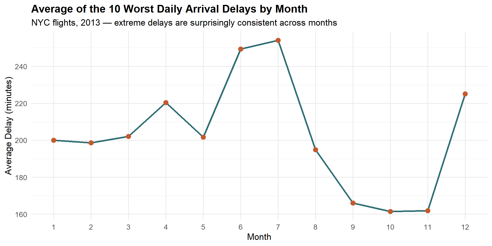
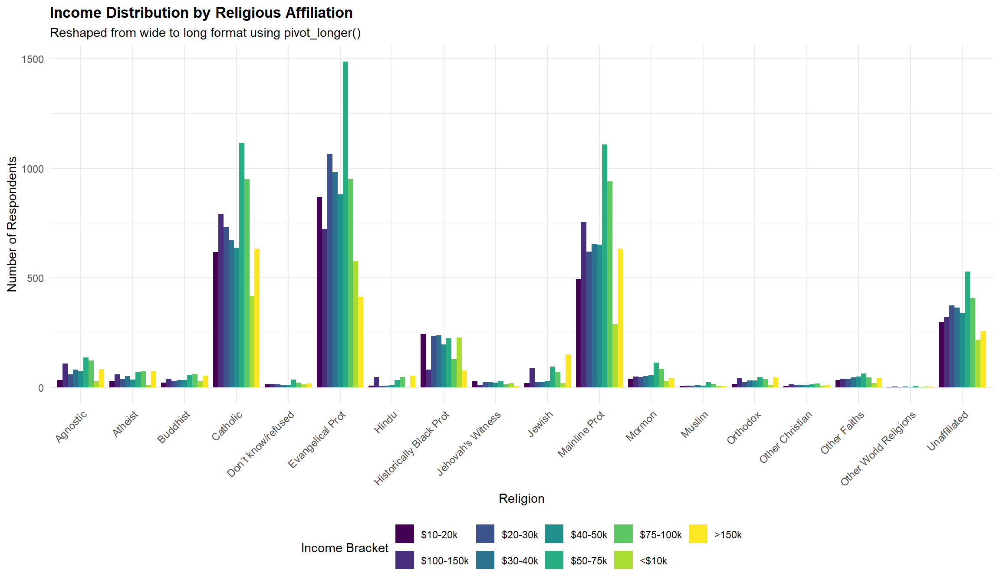
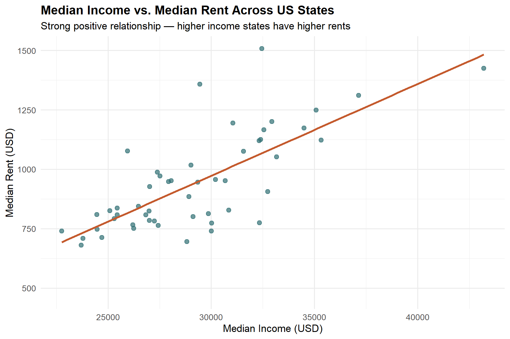
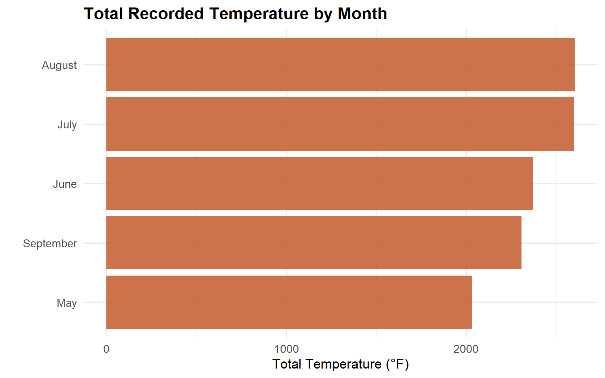
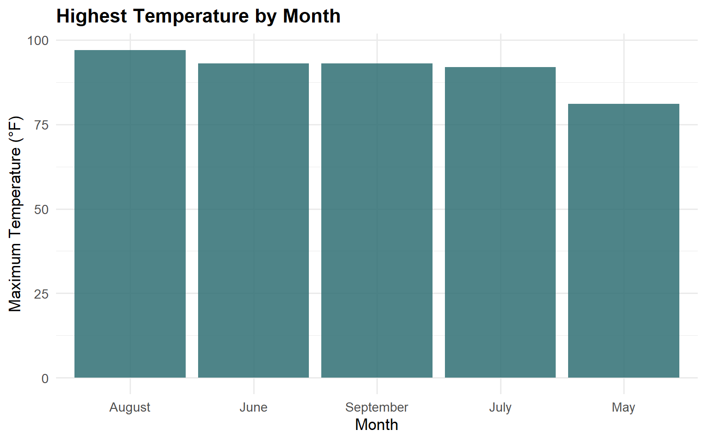
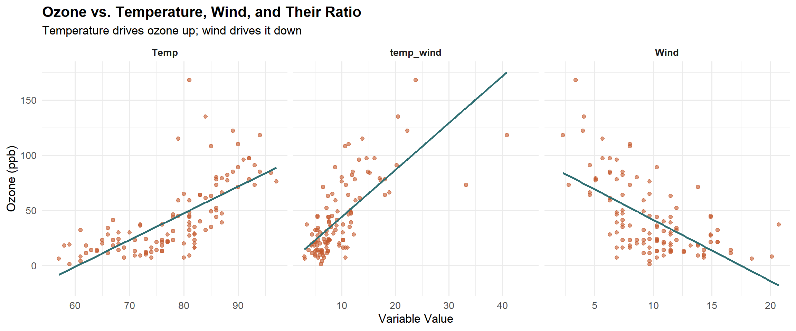

Data wrangling, visualization, and functional programming with R and the Tidyverse.
Author
Joseph Siroub
My R analytics work demonstrates development from basic data manipulation toward reusable, report-ready workflows. The sections below include live code and visualizations covering data wrangling, missing values, reshaping, and multivariate analysis.
NYC Flights: Worst Arrival Delays
Identifying the 10 worst daily arrival delays across 2013, then averaging by month to reveal seasonal patterns.
Show code
library(nycflights13)worst_delays <- flights %>%filter(!is.na(arr_delay)) %>%group_by(year, month, day) %>%slice_max(arr_delay, n =10, with_ties =FALSE) %>%ungroup() %>%group_by(month) %>%summarise(avg_delay =mean(arr_delay))ggplot(worst_delays, aes(x =factor(month), y = avg_delay, group =1)) +geom_line(color ="#2f6f73", linewidth =1.2) +geom_point(color ="#c45a2d", size =3) +labs(title ="Average of the 10 Worst Daily Arrival Delays by Month",subtitle ="NYC flights, 2013 — extreme delays are surprisingly consistent across months",x ="Month", y ="Average Delay (minutes)" ) +theme_minimal(base_size =13) +theme(plot.title =element_text(face ="bold"))

Insight: The average of the most extreme arrival delays remains relatively constant throughout the year, suggesting that factors causing very large delays (e.g., mechanical issues, air traffic control) are not strongly seasonal.
Reshaping: Religion & Income Distribution
Transforming relig_income from wide to long format, then creating a grouped bar chart.
Show code
relig_long <- relig_income %>%pivot_longer(-religion, names_to ="income", values_to ="count") %>%filter(income !="Don't know/refused")ggplot(relig_long, aes(x = religion, y = count, fill = income)) +geom_col(position ="dodge") +scale_fill_viridis_d() +labs(title ="Income Distribution by Religious Affiliation",subtitle ="Reshaped from wide to long format using pivot_longer()",x ="Religion", y ="Number of Respondents", fill ="Income Bracket" ) +theme_minimal(base_size =11) +theme(axis.text.x =element_text(angle =45, hjust =1, size =9),plot.title =element_text(face ="bold"),legend.position ="bottom" )

Rent vs. Income Across US States
Using pivot_wider() to reshape us_rent_income and explore the income–rent relationship.
Show code
us_rent_income %>%pivot_wider(names_from = variable, values_from =c(estimate, moe)) %>%ggplot(aes(x = estimate_income, y = estimate_rent)) +geom_point(color ="#2f6f73", size =2.5, alpha =0.7) +geom_smooth(method ="lm", se =FALSE, color ="#c45a2d", linewidth =1.2) +labs(title ="Median Income vs. Median Rent Across US States",subtitle ="Strong positive relationship — higher income states have higher rents",x ="Median Income (USD)", y ="Median Rent (USD)" ) +theme_minimal(base_size =13) +theme(plot.title =element_text(face ="bold"))

Missing Value Handling
Identifying and imputing missing values in the airquality dataset using mean replacement.
air.tib %>%mutate(Month_name =recode(Month,`5`="May", `6`="June", `7`="July",`8`="August", `9`="September" )) %>%group_by(Month_name) %>%summarise(total_temp =sum(Temp)) %>%mutate(Month_name =fct_reorder(Month_name, total_temp)) %>%ggplot(aes(x = total_temp, y = Month_name)) +geom_col(fill ="#c45a2d", alpha =0.85) +labs(title ="Total Recorded Temperature by Month",x ="Total Temperature (°F)", y ="") +theme_minimal(base_size =13) +theme(plot.title =element_text(face ="bold"))

Show code
air.tib %>%group_by(Month) %>%summarise(max_temp =max(Temp)) %>%mutate(Month =recode(Month,`5`="May", `6`="June", `7`="July",`8`="August", `9`="September" )) %>%mutate(Month =fct_reorder(Month, max_temp, .desc =TRUE)) %>%ggplot(aes(x = Month, y = max_temp)) +geom_col(fill ="#2f6f73", alpha =0.85) +labs(title ="Highest Temperature by Month",x ="Month", y ="Maximum Temperature (°F)") +theme_minimal(base_size =13) +theme(plot.title =element_text(face ="bold"))

Ozone vs. Temperature, Wind & Ratio
Show code
air.tib %>%mutate(temp_wind = Temp / Wind) %>%pivot_longer(cols =c(Temp, Wind, temp_wind),names_to ="variable",values_to ="value") %>%ggplot(aes(x = value, y = Ozone)) +geom_point(alpha =0.6, color ="#c45a2d", size =1.8) +geom_smooth(method ="lm", se =FALSE, color ="#2f6f73", linewidth =1) +facet_wrap(~variable, scales ="free_x") +labs(title ="Ozone vs. Temperature, Wind, and Their Ratio",subtitle ="Temperature drives ozone up; wind drives it down",x ="Variable Value", y ="Ozone (ppb)" ) +theme_minimal(base_size =13) +theme(plot.title =element_text(face ="bold"),strip.text =element_text(face ="bold") )

Conclusion: Ozone shows a strong positive association with temperature and a negative association with wind speed. The ratio Temp/Wind does not exhibit a clear linear relationship, confirming that the individual effects are more informative.
Top Destinations from NYC
Show code
flights %>%count(dest, sort =TRUE) %>%slice_head(n =10) %>%gt() %>%cols_label(dest ="Destination", n ="Number of Flights") %>%tab_header(title ="Top 10 Destinations from NYC",subtitle ="2013 flight data — major hubs dominate" ) %>%fmt_number(columns = n, use_seps =TRUE, decimals =0)
Top 10 Destinations from NYC
2013 flight data — major hubs dominate
Destination
Number of Flights
ORD
17,283
ATL
17,215
LAX
16,174
BOS
15,508
MCO
14,082
CLT
14,064
SFO
13,331
FLL
12,055
MIA
11,728
DCA
9,705
Functional Programming in R
Reusable Chart Function
Using custom functions and lapply() to automate chart generation across multiple years.
Show code
plot_ratio <-function(year_input) { student_ratio %>%filter(year == year_input) %>%top_n(10, student_ratio) %>%ggplot(aes(x =reorder(country, student_ratio), y = student_ratio)) +geom_col(fill ="#2f6f73", alpha =0.85) +coord_flip() +labs(title ="Top 10 Countries by Student-Teacher Ratio",subtitle =paste("Year:", year_input),x ="", y ="Student-Teacher Ratio" ) +theme_minimal(base_size =12) +theme(plot.title =element_text(face ="bold"))}
Key takeaway: Functions make analysis scalable. Instead of rewriting similar code, you define logic once and apply it consistently across different inputs.